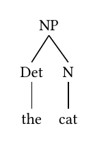
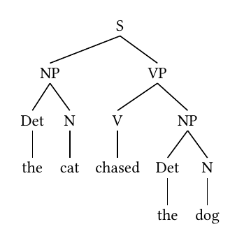
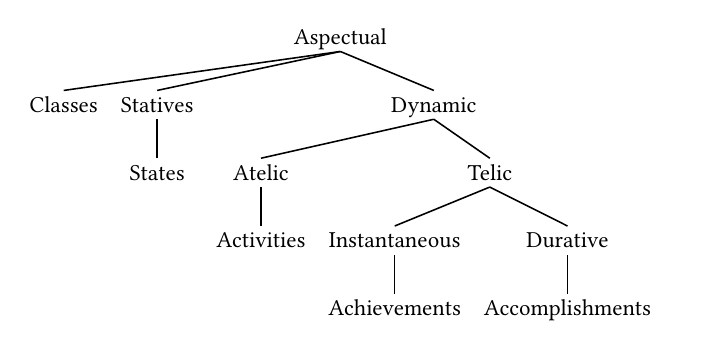
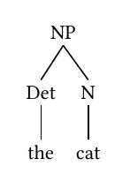
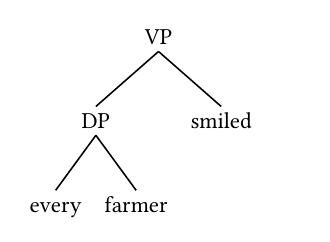

Rendering Syntactic Trees with arborize()
Created 2026-04-30 | Last updated 2026-05-15
Source:vignettes/arborize.Rmd
arborize.Rmd
The problem
Syntactic trees are a staple of linguistics. Whether you are analyzing argument structure, working through a derivation in a Minimalist framework, or simply illustrating the constituent structure of a sentence for a course handout, you need a way to produce clean, readable tree diagrams.
For a long time, the standard answer was LaTeX. Packages like
forest, tikz-qtree, and gb4e have
served linguists well, and they remain powerful tools for complex
diagrams. But they come with significant overhead: a full LaTeX
installation, custom .sty files, and a build pipeline that
can be difficult to integrate with modern R-based workflows. If your
analysis lives in a Quarto document, a Shiny app, or an R Markdown
report, pulling in LaTeX just to draw a tree is a heavy dependency for a
relatively simple task.
The situation is further complicated when you want to embed a tree in a format that has nothing to do with LaTeX — a Word document, a Keynote slide, a webpage. A PDF compiled from LaTeX does not travel well.
How arborize() solves it
arborize() takes a syntactic tree description as a
character string, renders it using Quarto’s Typst engine, and exports
the result as a standalone PNG image. The PNG can be embedded anywhere:
in a Quarto document, an R Markdown report, a Word file, a presentation,
or uploaded directly to a content management system.
The function handles the entire pipeline internally:
- It builds a minimal throwaway Quarto document containing the tree
- Quarto renders the document via Typst to an intermediate PDF
- The PDF is converted to PNG at the requested resolution
- Temporary files are cleaned up automatically
- Optionally, a provenance
.yamlfile is written alongside the PNG recording the tree string and all rendering arguments
No LaTeX required. No intermediate files left on disk. One function call, one PNG.
A note on first use
arborize() relies on Typst packages hosted at the Typst
package registry. On first use, Typst will download the required package
to a local cache (~/.cache/typst/packages/). This requires
an internet connection. Subsequent renders use the cached package and
work offline.
Two rendering backends
arborize() supports two rendering backends, controlled
by the tree_notation argument.
tree_notation = "simple" — bracket notation
The default backend uses the @preview/syntree Typst
package, which accepts bracket notation. This is the most compact input
format and the one most linguists already know from X-bar theory
textbooks and LaTeX forest notation.
Nodes are enclosed in square brackets. The first element of each bracket is the node label; subsequent elements are daughter nodes. Leaf nodes appear without brackets.
[S [NP [Det the] [N cat]] [VP [V sat]]]This backend suits the majority of use cases: simple to moderately complex phrase structure trees without specialized annotation.
tree_notation = "structured" — lingotree notation
The structured backend uses the @preview/lingotree Typst
package, which accepts nested tree() function calls. The
syntax is more verbose but more expressive: it supports per-node
styling, movement arrows between nodes, and multi-dominant trees where a
single node appears under two parents.
tree(
tag: [VP],
tree(
tag: [DP],
[every],
[farmer]
),
[smiled]
)This backend is the right choice when you need fine-grained visual control or when you are drawing structures from Government and Binding or Minimalist frameworks where movement and multi-dominance are central.
The user is responsible for providing valid tree()
syntax. The @preview/lingotree documentation is the
authoritative reference for the full API.
Getting the crop right: papersize and
margin
Before diving into examples, it is worth understanding how
papersize and margin interact to determine
what the final PNG looks like.
arborize() renders the tree onto a Typst page of the
specified papersize. That page becomes the PDF, which is
then converted to PNG. If the page is much larger than the tree, the PNG
will have a lot of empty whitespace around the tree — it will look small
and lost in the image. If the page is too small, the tree will be
clipped.
The goal is to choose a papersize that fits snugly
around the tree, with margin providing a comfortable
buffer. Think of it as choosing an envelope that is just big enough for
your letter.
Choosing a papersize
Typst’s paper sizes follow the ISO standard series. For reference:
| papersize | Dimensions | Good for |
|---|---|---|
"a7" |
74 × 105 mm | Very small trees, 2–3 nodes |
"a6" |
105 × 148 mm | Simple trees, 4–6 nodes |
"a5" |
148 × 210 mm | Default — medium trees |
"a4" |
210 × 297 mm | Wide or deep trees |
"a3" |
297 × 420 mm | Very wide trees |
Start small and go up if the tree is clipped. A simple NP fits on
"a6". A full clausal tree typically needs
"a5". The aspectual classes tree, which branches very
broadly, benefits from "a4".
Examples
A simple NP
The most basic case — a determiner phrase nested under a noun phrase.
A simple NP fits well on "a6".
arborize(
"[NP [Det the] [N cat]]",
output = "figures/np-tree.png",
papersize = "a6",
margin = "0.5cm"
)
A clausal tree
A simple transitive clause with subject and object. The extra
branching calls for "a5".
arborize(
"[S [NP [Det the] [N cat]] [VP [V chased] [NP [Det the] [N dog]]]]",
output = "figures/clause-tree.png",
papersize = "a5",
margin = "0.5cm"
)
Aspectual classes
The classic Vendlerian classification of verbal aspect — a wide,
multi-level tree. This one needs "a4" to accommodate its
breadth, and a slightly larger margin gives the labels room to
breathe.
arborize(
paste0(
"[Aspectual Classes ",
"[Statives [States]] ",
"[Dynamic ",
"[Atelic [Activities]] ",
"[Telic ",
"[Instantaneous [Achievements]] ",
"[Durative [Accomplishments]]]]]"
),
output = "figures/aspectual-classes.png",
papersize = "a4",
margin = "1cm",
dpi = 300
)
Print-quality output
For figures destined for publication, use dpi = 600. The
default dpi = 300 is appropriate for screen use and general
document embedding; 600 is the minimum for print reproduction. Note that
higher DPI produces a larger file but does not change the crop —
papersize and margin still control that.
arborize(
"[NP [Det the] [N cat]]",
output = "figures/np-tree-hires.png",
papersize = "a6",
margin = "0.5cm",
dpi = 600
)Tight crop with a narrow margin
For trees that will be embedded in a document with its own padding, a
tighter crop often looks cleaner. Reducing margin to
"0.1cm" crops very close to the tree itself.
arborize(
"[NP [Det the] [N cat]]",
output = "figures/np-tree-tight.png",
papersize = "a6",
margin = "0.1cm"
)
Structured notation with lingotree
A VP with a DP internal argument, rendered using the lingotree
backend. Note that the tree() string is passed verbatim to
Typst — the syntax is Typst, not R. Always pass
tree_notation = "structured" when using lingotree; without
it arborize() defaults to the syntree backend and the
output will be incorrect.
arborize(
"tree(
tag: [VP],
tree(
tag: [DP],
[every],
[farmer]
),
[smiled]
)",
tree_notation = "structured",
output = "figures/vp-lingotree.png",
papersize = "a6",
margin = "0.5cm"
)
Suppressing the provenance file
By default arborize() writes a companion
.yaml file alongside the PNG recording the tree string and
all rendering arguments. Pass provenance = FALSE to
suppress it.
arborize(
"[NP [Det the] [N cat]]",
output = "figures/np-tree.png",
papersize = "a6",
provenance = FALSE
)Working with provenance files
When provenance = TRUE (the default),
arborize() writes a .yaml file with the same
stem as the PNG. For a call like:
arborize(
"[NP [Det the] [N cat]]",
output = "figures/np-tree.png",
papersize = "a6",
margin = "0.5cm"
)The directory will contain:
figures/
├── np-tree.png
└── np-tree.yamlThe .yaml file records everything needed to reproduce
the render:
rendered_by: toolero::arborize(), version 0.4.0
rendered_at: 2026-04-30 14:23:11 CDT
output: /path/to/figures/np-tree.png
tree_notation: simple
typst_package: '@preview/syntree:0.2.1'
dpi: 300
papersize: a6
margin: 0.5cm
tree: '[NP [Det the] [N cat]]'To re-render from a provenance file — for example to increase the DPI
for a journal submission while keeping the exact same tree and crop
settings — read the .yaml and pass its fields back to
arborize():
p <- yaml::read_yaml("figures/np-tree.yaml")
arborize(
tree = p$tree,
output = "figures/np-tree-hires.png",
dpi = 600,
tree_notation = p$tree_notation,
papersize = p$papersize,
margin = p$margin,
overwrite = TRUE
)The provenance file ensures that the high-resolution version is
cropped identically to the original — same papersize, same
margin, different dpi.
A dedicated rearborize() function that wraps this
pattern is not yet implemented. If this would be useful to you, please
file an issue at https://github.com/erwinlares/toolero/issues — user
demand is the most direct signal that a feature is worth building.
Embedding trees in documents
Once you have a PNG, embedding it in any R-based document is straightforward.
In a Quarto document or R Markdown:
```{{r}}
#| label: fig-np-tree
#| fig-cap: "A simple NP"
#| out-width: "40%"
knitr::include_graphics("figures/np-tree.png")
```In a Quarto document using Markdown syntax directly:
Because arborize() produces a standard PNG, the tree can
also be inserted into Word documents via officer, added to
a PowerPoint slide via rvg, or uploaded directly to any
content management system.
Argument reference
| Argument | Default | Description |
|---|---|---|
tree |
— | Tree string in bracket or lingotree notation |
output |
"syntactic-tree.png" |
Path to the output PNG file |
dpi |
300 |
Resolution in dots per inch |
tree_notation |
"simple" |
"simple" for syntree, "structured" for
lingotree |
papersize |
"a5" |
Typst paper size; match to tree complexity |
margin |
"0.5cm" |
Page margin; controls buffer around the tree |
provenance |
TRUE |
Write companion .yaml provenance file |
overwrite |
FALSE |
Overwrite existing output files |
References
- Typst
syntreepackage (v0.2.1): https://typst.app/universe/package/syntree - Typst
lingotreepackage (v1.0.0): https://typst.app/universe/package/lingotree